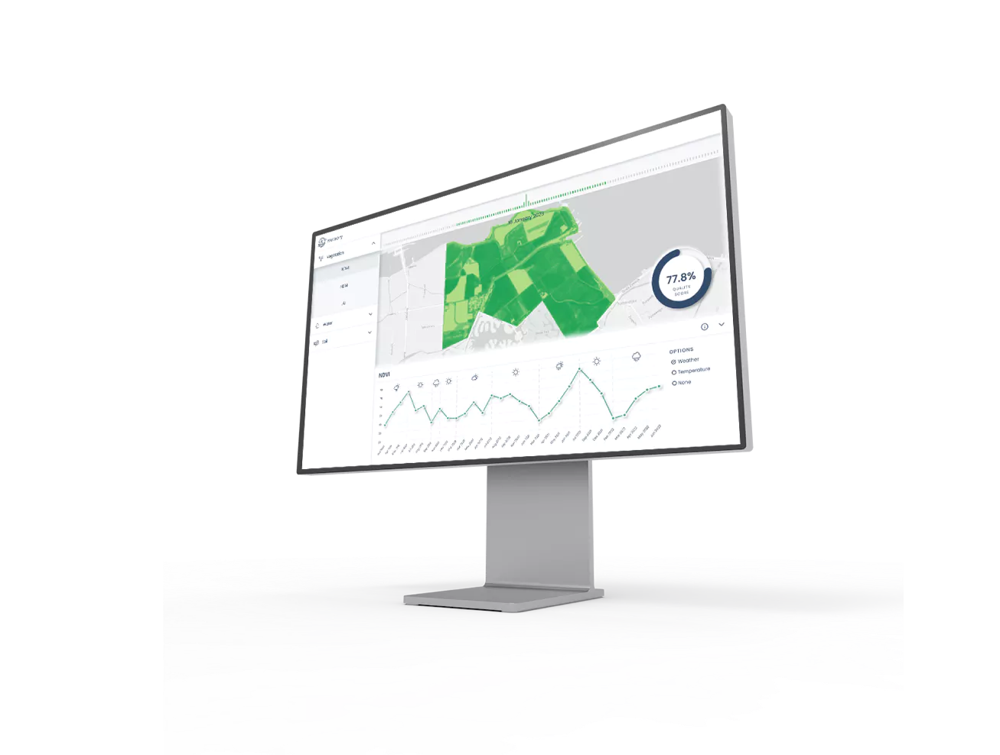
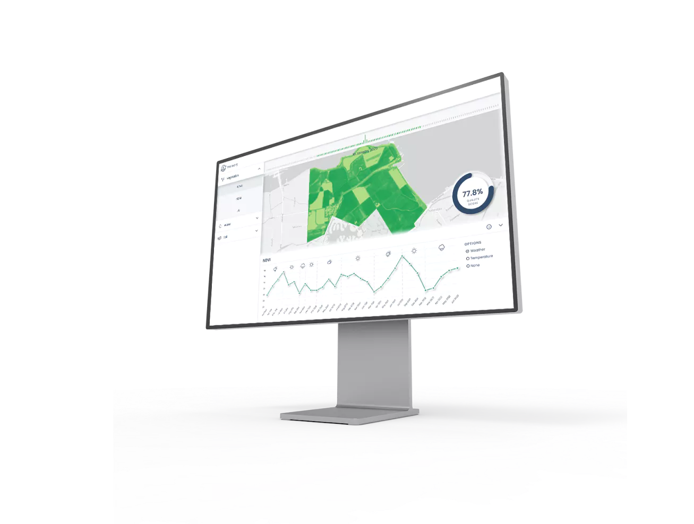
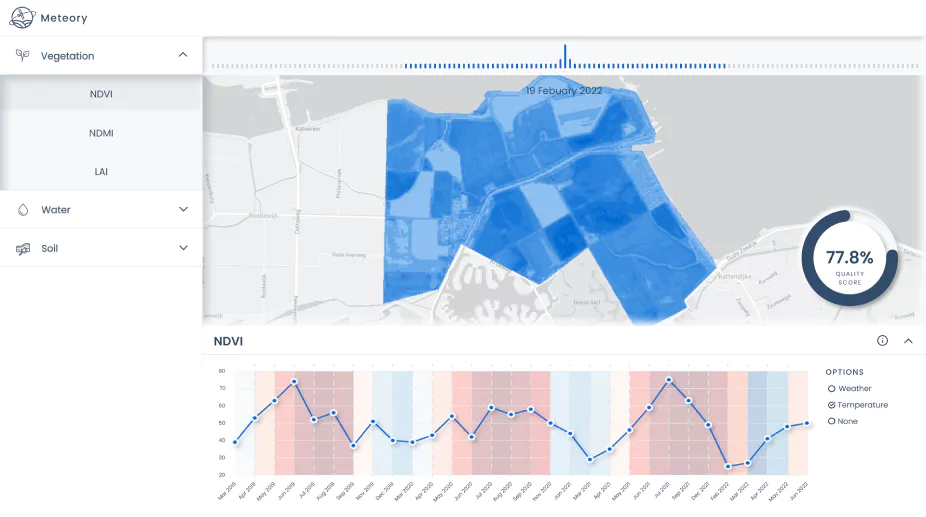
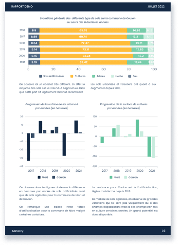
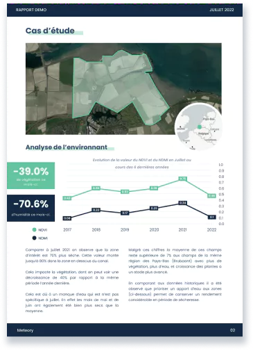

Newsletter
Our story🌱
Meteory for All
Latest development
Meteory for
You
Meteory for
Cities
Meteory for
Businesses
Meteory's satellite data solutions are tailored for
many use cases
, here are some of the challenges you could face, here are
some solution we could bring.
Design for urban planning, environment health impact and diagnosis, our solutions provide clear metrics to help you plan and assess carbon neutrality
Each datasets has a different purpose, we believe Meteory global environment awareness can help you challenge your environment remote sensing use cases
Combining the best in class satellite data and our in-house machine learning and AI knowledge, we believe there is a dataset for your industry, reach us.
Carbon monitoring
Environmental management
Ecosystem Health & Land Assessment
Product Spotlight💻
Explore environmental indicators
Go back in time to explore archive data
Support your decisions with numbers
Gain insights and better understand trends over the area of
interest
Design for urban planning, environment health impact and diagnosis, our solutions provide clear metrics to help you plan and assess carbon neutrality
Each datasets has a different purpose, we believe Meteory global environment awareness can help you challenge your environment remote sensing use cases
Combining the best in class satellite data and our in-house machine learning and AI knowledge, we believe there is a dataset for your industry, reach us.
Carbon monitoring
Environmental management
Ecosystem Health & Land Assessment
At the heart of Meteory is our Data Platform , which seamlessly integrates data from various sources to provide an all-in-one tool for decision-makers. This platform offers unparalleled insights into ecosystem health, land assessment, and other critical environmental factors.
Thank you for joining us on this journey to harness the power of satellite data for a greener and more sustainable world! Stay tuned for more updates, and check out the platform!

Leverage
satellite data
for environment decision-making.


Automated Reports
are available to keep you up-to-date, user-friendly and will all
the insights for decision makers
The carbon sequestration prediction model is making some good
progress recently, the application in agricultural lands help
estimate the increase carbon capture of the soils. Version two of
model is on the way.
Key parameters have been identify to assess efficiently the health
of the vegetation and ecosystems. The latest development of the
platform enable access to them and easy interaction. Book a demo
to see all about it
Hi [name] and welcome to Meteory first newsletter ! This is a place where we introduce you to our latest updates, datasets, and developments .
We believe that good decisions needs good data. Today with our freshly build platform, this idea has become a reality. We are excited to show you what we have built !
BOOK A DEMO
BOOK A DEMO
PLATFORM VIDEO
PLATFORM VIDEO